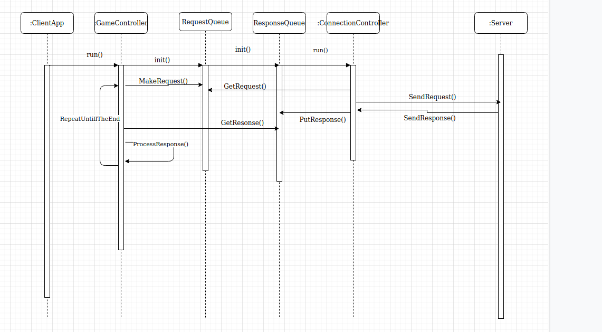
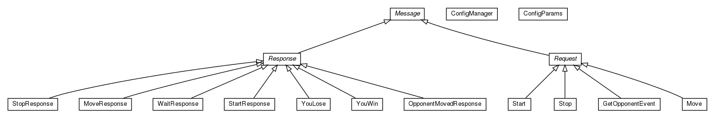
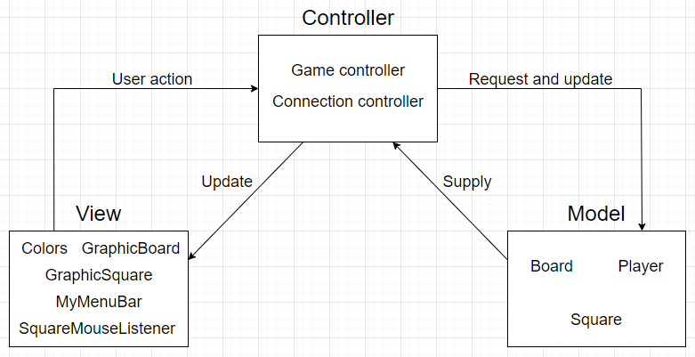

Authors: Adrian Prorok, Bartlomiej Olber
Peer-to-peer game. Written using Model-View-Controller pattern. Communication between server and client sides is based on java.NIO tools. User's interface is designed as event-driven.
The event listener is waiting for user's actions and allows to handle them. Thanks to this, the other components of the program can obtain, process and update game status information.
The use of the Swing library enabled us to graphically present our entire application.
Both sides are multithreaded. For client side threads synchronization BlockingQueues provided in Java Concurrent library. The sequence diagram below shows briefly the way Controllers'
threads communicate with each other.
In the project we also use Jackson ObjectMapper class as serializer/deserializer of Java objects to JSON format text and vice versa. The Mapper is included as dependency in pom.xml file.
The communication between server and client sides is based on Message subsclasses. Polymorphic Requests and Responses are sent/received between the communicating sides. Below is shown Message class diagram.
Following the principles taken from the MVC software design pattern, we divided our application into three cooperating modules.
Below is a diagram that presents them, shows the classes contained in each module and describes the cooperation between the modules.
